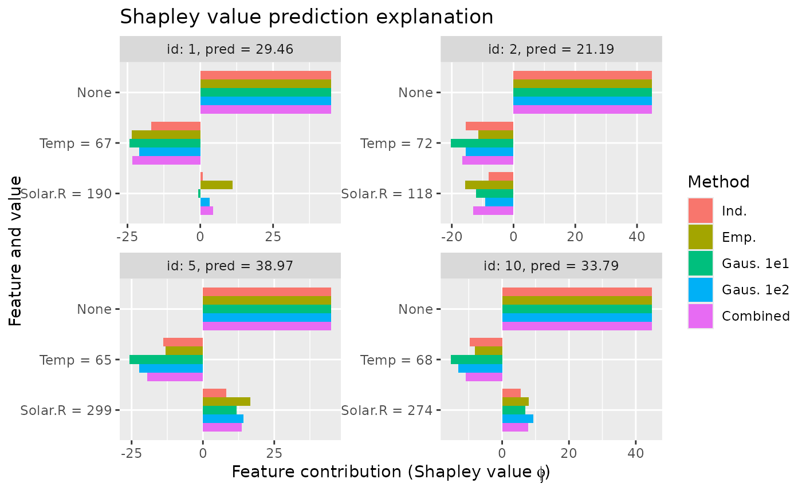

R/plot.R
plot_SV_several_approaches.RdMake plots to visualize and compare the estimated Shapley values for a list of
explain() objects applied to the same data and model.
plot_SV_several_approaches(
explanation_list,
index_explicands = NULL,
only_these_features = NULL,
plot_phi0 = FALSE,
digits = 4,
add_zero_line = FALSE,
axis_labels_n_dodge = NULL,
axis_labels_rotate_angle = NULL,
horizontal_bars = TRUE,
facet_scales = "free",
facet_ncol = 2,
geom_col_width = 0.85,
brewer_palette = NULL
)A list of explain() objects applied to the same data and model.
If the entries in the list is named, then the function use these names. Otherwise, it defaults to
the approach names (with integer suffix for duplicates) for the explanation objects in explanation_list.
Integer vector. Which of the explicands (test observations) to plot.
E.g. if you have explained 10 observations using explain(), you can generate a plot for the
first 5 observations/explicands and the 10th by setting index_x_explain = c(1:5, 10).
String vector. Containing the names of the features which are to be included in the bar plots.
Boolean. If we are to include the \(\phi_0\) in the bar plots or not.
Integer. Number of significant digits to use in the feature description.
Boolean. If we are to add a black line for a feature contribution of 0.
Integer. The number of rows that should be used to render the labels. This is useful for displaying labels that would otherwise overlap.
Numeric. The angle of the axis label, where 0 means horizontal, 45 means tilted,
and 90 means vertical. Compared to setting the angle inggplot2::theme() / ggplot2::element_text(), this also
uses some heuristics to automatically pick the hjust and vjust that you probably want.
Boolean. Flip Cartesian coordinates so that horizontal becomes vertical,
and vertical, horizontal. This is primarily useful for converting geoms and statistics which display
y conditional on x, to x conditional on y. See ggplot2::coord_flip().
Should scales be free ("free", the default), fixed ("fixed"), or free in one dimension
("free_x", "free_y")? The user has to change the latter manually depending on the value of horizontal_bars.
Integer. The number of columns in the facet grid. Default is facet_ncol = 2.
Numeric. Bar width. By default, set to 85% of the ggplot2::resolution() of the data.
String. Name of one of the color palettes from RColorBrewer::RColorBrewer().
If NULL, then the function uses the default ggplot2::ggplot() color scheme.
The following palettes are available for use with these scales:
BrBG, PiYG, PRGn, PuOr, RdBu, RdGy, RdYlBu, RdYlGn, Spectral
Accent, Dark2, Paired, Pastel1, Pastel2, Set1, Set2, Set3
Blues, BuGn, BuPu, GnBu, Greens, Greys, Oranges, OrRd, PuBu, PuBuGn, PuRd, Purples, RdPu, Reds, YlGn, YlGnBu, YlOrBr, YlOrRd
A ggplot2::ggplot() object.
# Load necessary libraries
library(xgboost)
library(data.table)
# Get the data
data("airquality")
data <- data.table::as.data.table(airquality)
data <- data[complete.cases(data), ]
# Define the features and the response
x_var <- c("Solar.R", "Wind", "Temp", "Month")
y_var <- "Ozone"
# Split data into test and training data set
ind_x_explain <- 1:12
x_train <- data[-ind_x_explain, ..x_var]
y_train <- data[-ind_x_explain, get(y_var)]
x_explain <- data[ind_x_explain, ..x_var]
# Fitting a basic xgboost model to the training data
model <- xgboost::xgboost(
data = as.matrix(x_train),
label = y_train,
nround = 20,
verbose = FALSE
)
# Specifying the phi_0, i.e. the expected prediction without any features
prediction_zero <- mean(y_train)
# Independence approach
explanation_independence <- explain(
model = model,
x_explain = x_explain,
x_train = x_train,
approach = "independence",
prediction_zero = prediction_zero,
n_samples = 1e2
)
#> Note: Feature classes extracted from the model contains NA.
#> Assuming feature classes from the data are correct.
#> Setting parameter 'n_batches' to 2 as a fair trade-off between memory consumption and computation time.
#> Reducing 'n_batches' typically reduces the computation time at the cost of increased memory consumption.
# Empirical approach
explanation_empirical <- explain(
model = model,
x_explain = x_explain,
x_train = x_train,
approach = "empirical",
prediction_zero = prediction_zero,
n_samples = 1e2
)
#> Note: Feature classes extracted from the model contains NA.
#> Assuming feature classes from the data are correct.
#> Setting parameter 'n_batches' to 2 as a fair trade-off between memory consumption and computation time.
#> Reducing 'n_batches' typically reduces the computation time at the cost of increased memory consumption.
# Gaussian 1e1 approach
explanation_gaussian_1e1 <- explain(
model = model,
x_explain = x_explain,
x_train = x_train,
approach = "gaussian",
prediction_zero = prediction_zero,
n_samples = 1e1
)
#> Note: Feature classes extracted from the model contains NA.
#> Assuming feature classes from the data are correct.
#> Setting parameter 'n_batches' to 10 as a fair trade-off between memory consumption and computation time.
#> Reducing 'n_batches' typically reduces the computation time at the cost of increased memory consumption.
# Gaussian 1e2 approach
explanation_gaussian_1e2 <- explain(
model = model,
x_explain = x_explain,
x_train = x_train,
approach = "gaussian",
prediction_zero = prediction_zero,
n_samples = 1e2
)
#> Note: Feature classes extracted from the model contains NA.
#> Assuming feature classes from the data are correct.
#> Setting parameter 'n_batches' to 10 as a fair trade-off between memory consumption and computation time.
#> Reducing 'n_batches' typically reduces the computation time at the cost of increased memory consumption.
# Combined approach
explanation_combined <- explain(
model = model,
x_explain = x_explain,
x_train = x_train,
approach = c("gaussian", "ctree", "empirical"),
prediction_zero = prediction_zero,
n_samples = 1e2
)
#> Note: Feature classes extracted from the model contains NA.
#> Assuming feature classes from the data are correct.
#> Setting parameter 'n_batches' to 10 as a fair trade-off between memory consumption and computation time.
#> Reducing 'n_batches' typically reduces the computation time at the cost of increased memory consumption.
# Create a list of explanations with names
explanation_list <- list(
"Ind." = explanation_independence,
"Emp." = explanation_empirical,
"Gaus. 1e1" = explanation_gaussian_1e1,
"Gaus. 1e2" = explanation_gaussian_1e2,
"Combined" = explanation_combined
)
if (requireNamespace("ggplot2", quietly = TRUE)) {
# The function uses the provided names.
plot_SV_several_approaches(explanation_list)
# We can change the number of columns in the grid of plots and add other visual alterations
plot_SV_several_approaches(explanation_list,
facet_ncol = 3,
facet_scales = "free_y",
add_zero_line = TRUE,
digits = 2,
brewer_palette = "Paired",
geom_col_width = 0.6
) +
ggplot2::theme_minimal() +
ggplot2::theme(legend.position = "bottom", plot.title = ggplot2::element_text(size = 0))
# We can specify which explicands to plot to get less chaotic plots and make the bars vertical
plot_SV_several_approaches(explanation_list,
index_explicands = c(1:2, 5, 10),
horizontal_bars = FALSE,
axis_labels_rotate_angle = 45
)
# We can change the order of the features by specifying the
# order using the `only_these_features` parameter.
plot_SV_several_approaches(explanation_list,
index_explicands = c(1:2, 5, 10),
only_these_features = c("Temp", "Solar.R", "Month", "Wind")
)
# We can also remove certain features if we are not interested in them
# or want to focus on, e.g., two features. The function will give a
# message to if the user specifies non-valid feature names.
plot_SV_several_approaches(explanation_list,
index_explicands = c(1:2, 5, 10),
only_these_features = c("Temp", "Solar.R"),
plot_phi0 = TRUE
)
}
